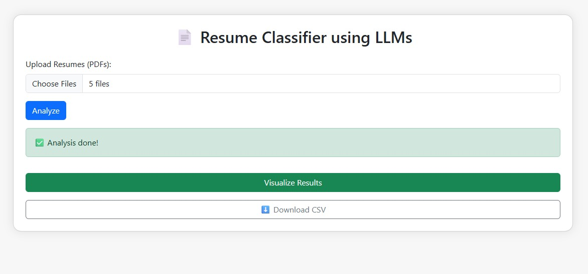

📄 Resume Screening Assistant
The Resume Screening Assistant is an AI-powered application that helps recruiters and organizations quickly analyze and rank a batch of resumes against a given job description. By leveraging natural language processing and machine learning techniques, it saves hours of manual effort in hiring processes.
🔧 What It Does
- Reads and extracts text from multiple resumes (PDF format)
- Compares resumes with a given job description
- Uses BERT-based sentence embeddings to calculate similarity
- Ranks resumes by relevance and outputs top candidates
- Provides a visual chart of matching scores
⚙️ How It Works
- User uploads multiple PDF resumes into the system.
- The job description is entered as input by the recruiter.
- Text is extracted using
PyPDF2. - Each resume and the JD are converted into embeddings using
sentence-transformers. - Cosine similarity is computed to score how well each resume matches the JD.
- Results are sorted, ranked, and visualized with
matplotlib.
📥 Resume Upload Interface
📊 Match Scores Output

🧰 Tech Stack
- Languages: Python
- Libraries: PyPDF2, Sentence Transformers, Matplotlib, Pandas, FuzzyWuzzy
- Frontend: Streamlit / Flask (optional UI)
- Model: BERT embeddings from SentenceTransformers
- Deployment: Localhost or Streamlit Sharing
🎯 Key Highlights
- Fast and accurate resume matching using NLP
- Automated candidate ranking
- PDF parsing and processing pipeline
- Visual insights for match score analysis
- Highly extendable for ATS integration